El estadounidense , de origen mexicano , Oscar De La Hoya , perdió en decisión polémica la corona de los pesos wélter , versión Consejo Mundial de Boxeo , ante el puertorriqueño Félix " Tito " Trinidad y desde ayer , domingo , la recuperó porque el hombre que lo derrotó dijo que ya no la quería.

La decisión de Trinidad , que fue comunicada de manera oficial al CMB , deja al campeón invicto puertorriqueño con sólo la corona del peso superwélter de la Asociación Mundial de Boxeo ( AMB ) , que ganó hace dos semanas con su triunfo frente al estadounidense David Reid.
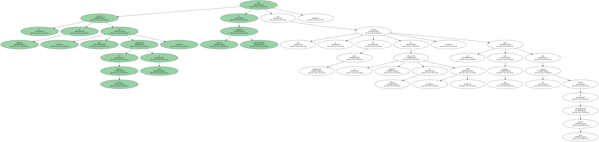Trinidad también renunció hace unas semanas al cetro wélter de la Federación Internacional ( FIB ) y en los próximos meses podría enfrentarse al campeón superwélter de la misma organización , el estadounidense , de origen mexicano , Fernando " Feroz " Vargas , que antes tendrá que superar la prueba del ghanés Ike Quartey el próximo 15 de abril.
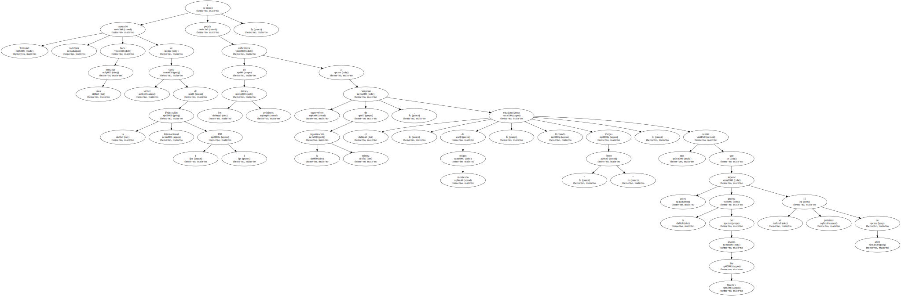De inmediato el CMB reconoció también de manera oficial a De La Hoya como el campeón del peso wélter al ser el ganador de la pelea de selección de máximo aspirante que el mismo organismo había ordenado con su compatriota Derrell Coley como duelo eliminatorio.
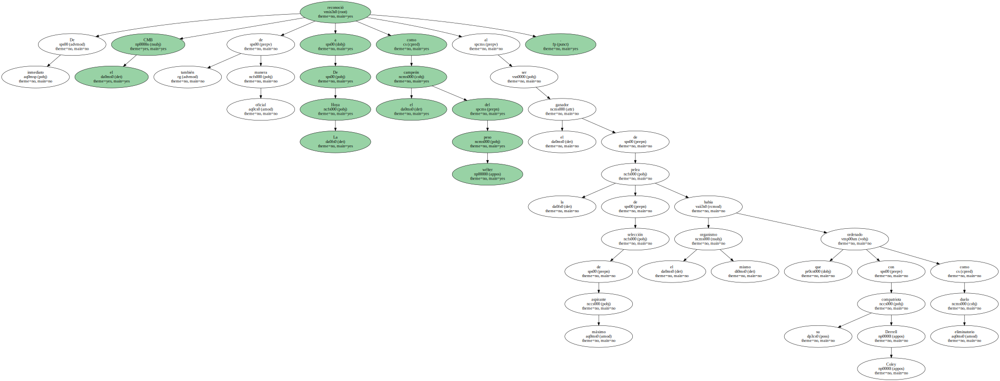De La Hoya ganó por nocáut técnico en el séptimo asalto a Coley , en pelea disputada en el Madison Square Garden el pasado 26 de febrero.
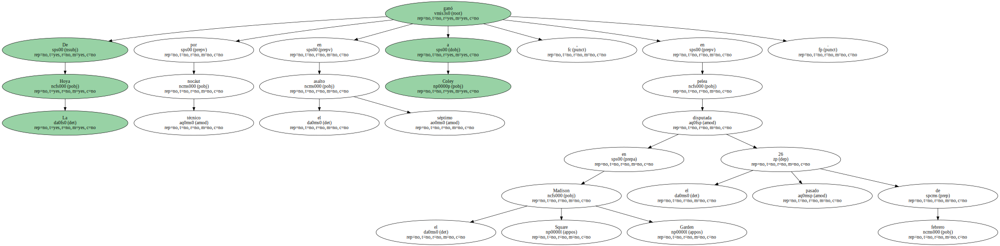La decisión del CMB era algo que esperaba el campo de De La Hoya y su jefe de relaciones públicas , Reynaldo Solórzano , dijo hoy a EFE que el " Golden Boy " había recibido la noticia con gran entusiasmo y satisfacción por tener de nuevo la corona mundial.
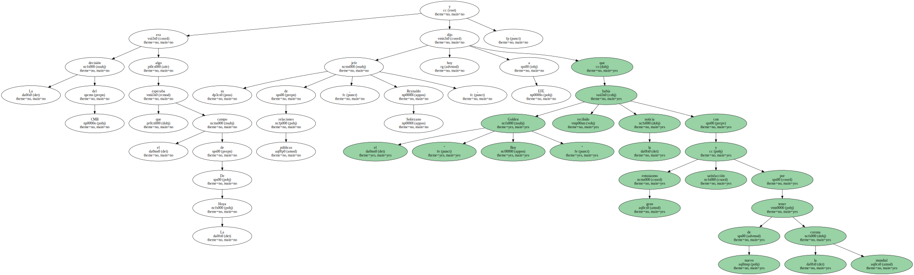" Oscar siempre dijo desde que terminó la pelea contra Trinidad que no la perdió y que en ningún momento dejo de pensar que era el verdadero campeón del mundo , la mejor demostración la dio en su pelea contra Shane Mosley " , destacó Solórzano.
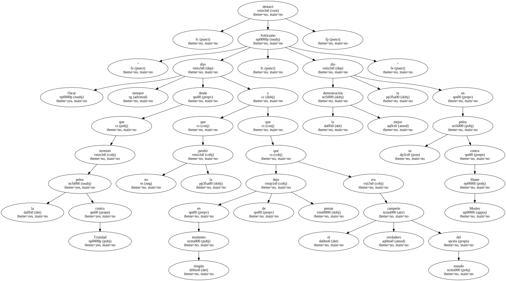De La Hoya en su retorno a los cuadriláteros después de haber perdido el 18 de septiembre frente a Trinidad , demostró estar en plenitud de forma con un boxeo mucho más agresivo y de mayor pegada que destruyó a Coley.
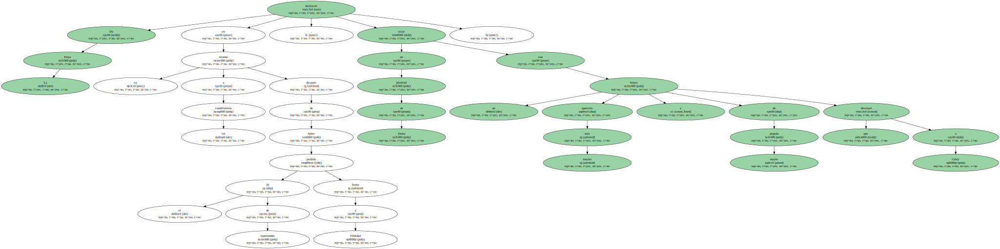La decisión del CMB también fue vista por De La Hoya y el promotor Bob Arum como algo importante en la búsqueda de la credibilidad para el deporte del boxeo.
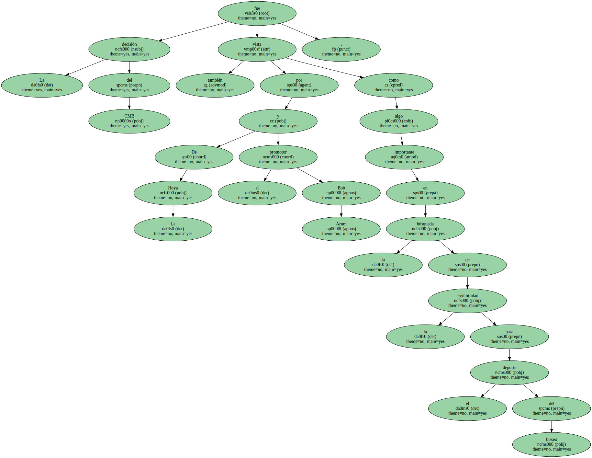" No se debe permitir que los títulos queden inactivos en manos de boxeadores que piensen sólo en sus intereses y no en el del deporte y el resto de los peleadores que tiene que tener la oportunidad de luchar por una corona " , comentó Arum.
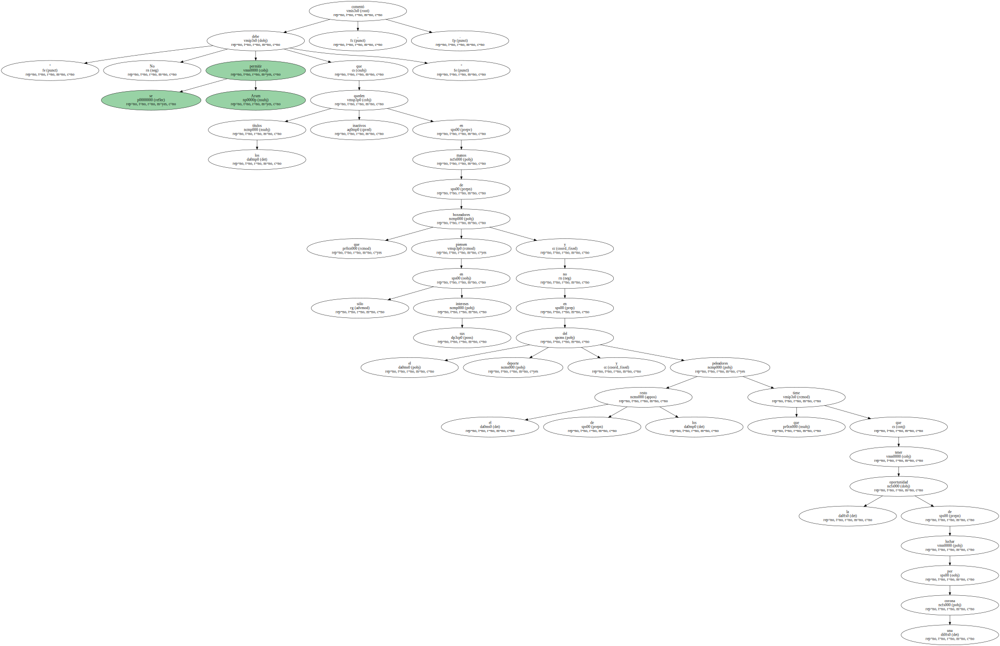Sin embargo , dijo que Trinidad se había equivocado al no quererle dar la revancha a De La Hoya en la categoría de los pesos wélter porque era la pelea que todos los aficionados estaban esperando.
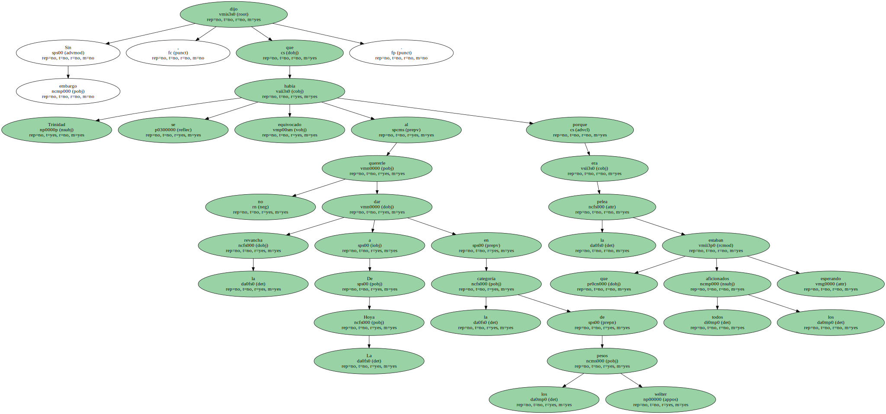" Honestamente pienso que Trinidad debía haber pensado mucho mejor la decisión de renunciar al título wélter sin antes no haber hecho una segunda pelea contra De La Hoya " , valoró Arum.
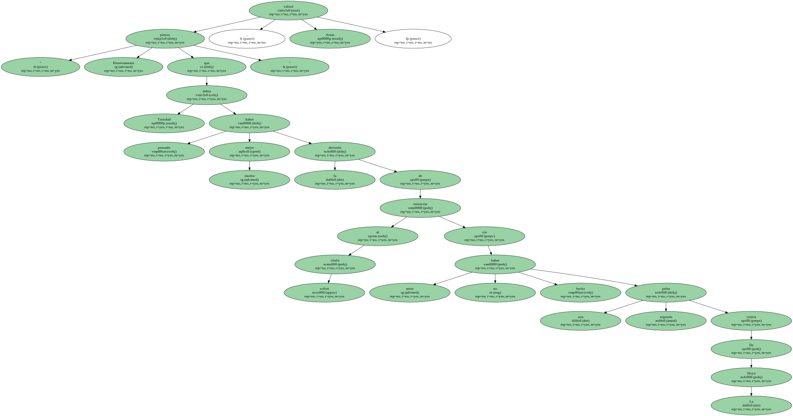" Debe mentalizarse que nadie le va a dar el dinero que iba a ganar por la revancha contra De La Hoya ".

Por su parte , Solórzano reiteró que De La Hoya se siente muy cómodo y a gusto en la categoría de los pesos wélter y para nada ha pensado en enfrentarse a Trinidad en una superior.
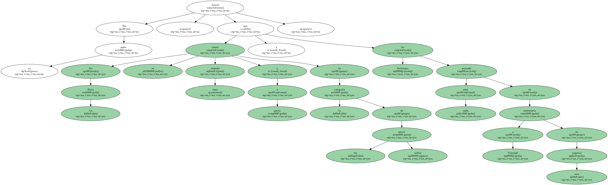El campeón invicto boricua ha dicho que no tiene ningún problema en darle la revancha a De La Hoya , pero siempre que el " Golden Boy " decida subir al peso super wélter en el que debutó el pasado 3 de marzo para ganar de forma espectacular y por decisión unánime a Reid después de haberlo tirado varias veces a la lona.
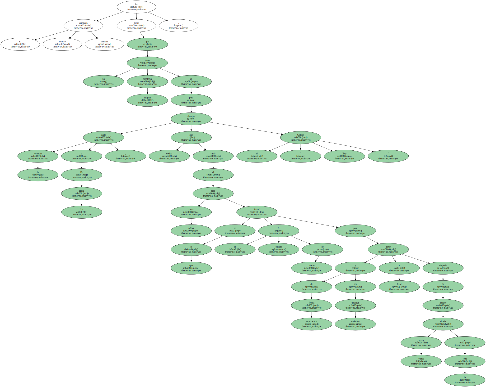" Oscar tiene muy bien definido su futuro y su programación para este año y ahora el siguiente objetivo a conseguir es enfrentarse a Shane Mosley el próximo 17 de junio en el Staples Center de Los Angeles ante su público para defender el título de campeón del mundo , que siempre lo fue " , subrayó Solórzano.
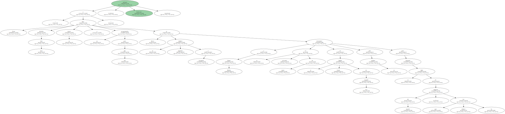Con la entrega del nuevo título a De La Hoya , el ex medalla de oro Olímpica en Barcelona'92 tendrá que establecer qué corona expone cuando se enfrente a Mosley porque también tiene en su poder la de la Asociación Internacional de Boxeo ( AIB ).
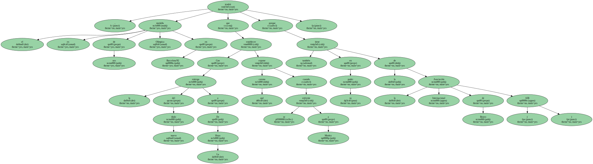